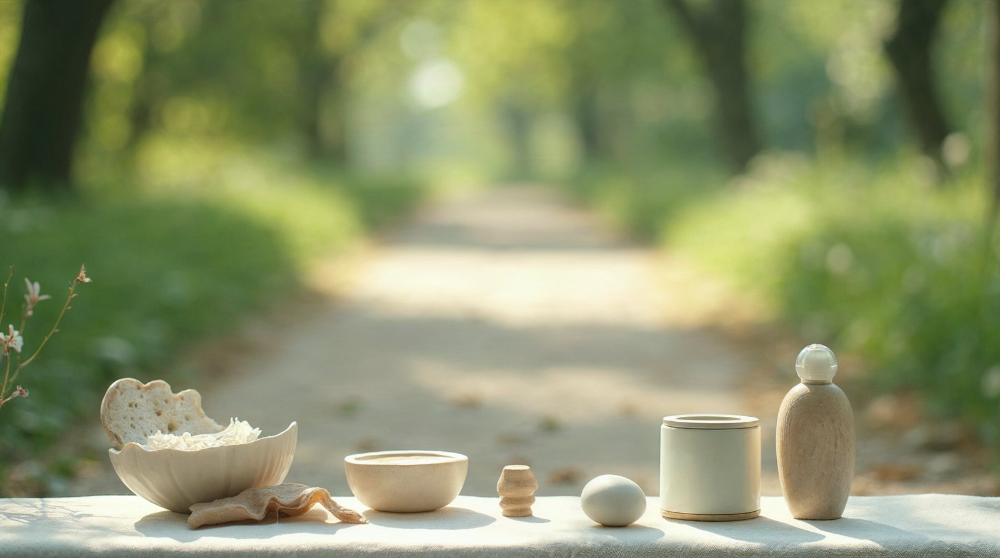
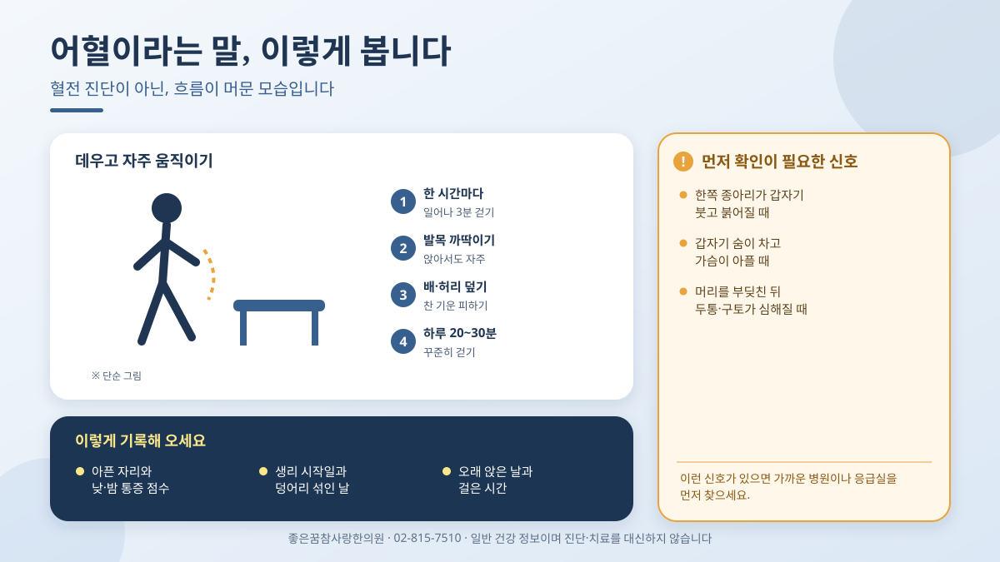

이종호 한의사 감수좋은꿈참사랑한의원 대표원장 (한의사 면허번호 19769)발행 2026-11-26 · 수정 2026-11-26
이 글의 차례
넘어져 부딪힌 자리가 몇 주가 지나도 뻐근하고, 비 오기 전날이면 그 자리가 쿡쿡 쑤신다는 분이 계십니다. 생리 때마다 검붉은 덩어리가 섞여 나오고 아랫배를 바늘로 찌르는 듯 아프다는 분도 계십니다. 이야기는 달라도 진료실에서 자주 같은 단어를 꺼내게 됩니다.
"피의 흐름이 느려져 머물러 있는 모습이 보여요. 한의학에서는 어혈이라고 부릅니다." 이렇게 말씀드리면 많은 분이 놀라십니다. "피가 뭉쳤다고요? 혈관이 막혔다는 건가요? 큰일 난 거 아닌가요?" 뭉쳤다는 말이 주는 무게 때문에 걱정이 앞서시는 겁니다.
먼저 분명히 말씀드리겠습니다. 어혈은 병명이 아닙니다. 혈관 검사나 혈액 검사로 확인하는 혈전과 같은 말도 아닙니다. 한의학에서 오랫동안 몸의 상태를 묘사할 때 써 온 전통적인 표현이고, 진찰에서 본 여러 모습을 묶어 설명하는 말입니다.
이 글에서는 어혈이라는 말이 어떤 몸의 모습을 가리키는지, 진료실에서 무엇을 보고 이 설명을 쓰는지, 비슷해 보이지만 병원 검사가 먼저인 경우는 무엇인지, 그리고 생활에서 흐름을 돕는 습관은 어떻게 챙기면 좋은지를 차례로 말씀드리겠습니다.
어혈은 어떤 몸 상태를 말하나요?
한의학에서 혈은 몸을 쉬지 않고 돌며 구석구석을 적시고 기르는 것으로 설명해 왔습니다. 강물이 막힘없이 흘러야 맑듯, 혈도 잘 돌아야 제 역할을 한다고 봅니다. 그 흐름이 느려지거나 한곳에 머물러 제 길로 돌지 못하는 모습을 어혈이라고 부릅니다.
어혈이라는 말은 크게 두 가지 모습을 아우릅니다. 하나는 부딪히거나 다친 뒤 피가 혈관 밖으로 나와 멍처럼 머문 모습이고, 다른 하나는 다친 일 없이도 추위, 긴장, 오래 앉은 자세 등으로 흐름이 느려져 생기는 모습입니다.
어혈을 떠올리게 하는 대표적인 특징은 통증의 성질입니다. 늘 같은 자리가 아프고, 바늘로 찌르듯 쿡쿡 쑤시며, 누르면 더 아프고, 밤에 더 심해지는 통증을 옛 문헌에서는 어혈과 연결해 설명해 왔습니다. 돌아다니며 아픈 통증과는 결이 다르다고 봅니다.
이 말도 사람에게 붙이는 딱지가 아닙니다. 다친 뒤 몇 주, 출산이나 수술 뒤의 회복기, 오래 앉아 일한 시기처럼 특정한 때에 이런 모습이 짙어졌다가 몸이 회복되고 생활이 바뀌면 옅어지기도 합니다. 지금 이 시기의 몸을 묘사하는 말로 이해해 주시면 됩니다.
혈전과 어혈은 같은 말인가요?
같은 말이 아닙니다. 혈전은 혈관 안에서 피가 굳어 생긴 덩어리를 말하고, 초음파나 혈액 검사 같은 검사로 확인하는 의학적 진단입니다. 다리 깊은 정맥이나 뇌, 심장 혈관에 생기면 병원 치료가 필요한 경우가 있습니다.
어혈은 검사로 보이는 덩어리를 가리키는 말이 아니라, 진찰에서 보이는 통증의 성질, 혀와 입술의 색, 맥의 결, 생리의 모습 같은 여러 단서를 묶어 부르는 전통적인 설명입니다. 그래서 어혈이라는 설명을 들었다고 혈관이 막혔다는 뜻은 아닙니다.
반대로 혈전이 의심되는 모습이 있다면 어혈이라는 설명보다 병원 검사가 먼저입니다. 이 구분을 분명히 해 두시면 불필요한 걱정도, 놓치면 안 될 신호도 함께 줄일 수 있습니다.
왜 어혈 같은 상태가 생긴다고 보나요
한의학에서는 혈이 기운을 따라 흐른다고 설명해 왔습니다. 그래서 다쳐서 길이 상하거나, 차가워서 흐름이 움츠러들거나, 긴장으로 기운이 막히거나, 기운이 약해 밀어 주는 힘이 모자라면 혈이 머문다고 봅니다.
생활에서 흔히 보는 이유는 이렇습니다.
- 넘어지거나 부딪히는 사고, 교통사고 뒤의 회복기
- 수술이나 출산 뒤 몸이 회복되는 시기
- 하루 대부분을 같은 자세로 앉아 있는 생활
- 배와 다리를 차게 두는 옷차림과 찬 음식
- 오래 이어진 긴장과 스트레스
- 오래된 통증으로 몸을 잘 움직이지 않는 경우
오래 앉아 있는 생활이 특히 자주 이야기됩니다. 다리와 골반은 걸을 때 근육이 혈관을 짜 주면서 흐름이 돕습니다. 하루 종일 앉아 있으면 이 펌프가 쉬게 되어 다리가 무겁고 붓고, 골반 쪽이 뻐근해지기 쉽습니다.
계절도 영향을 줍니다. 추운 겨울에는 몸이 움츠러들고 움직임이 줄면서 오래된 통증 자리가 더 쑤신다는 분이 많아집니다. 생리통도 몸이 찬 시기에 더 심하다고 말씀하시는 경우가 흔합니다.
현대 의학으로 보면 이런 모습 뒤에 근육과 인대의 손상 회복 과정, 자궁근종이나 자궁내막증, 하지정맥류, 혈소판이나 응고 기능의 문제, 약의 영향 같은 이유가 숨어 있을 수 있습니다. 그래서 어혈이라는 설명을 드리더라도 필요하면 병원 검사를 함께 권해 드립니다.
진맥·설진·문진에서는 무엇을 함께 보나요
진맥에서는 맥의 결을 봅니다. 어혈에 가까운 분은 손끝에서 맥이 매끄럽게 흐르지 않고 칼로 대나무를 긁듯 껄끄럽게 걸리는 느낌을 보이는 경우가 많습니다. 다만 맥의 결은 숙련된 손으로도 미묘해서 맥 하나로 정하지 않습니다.
설진에서는 혀의 색과 혀 아래를 봅니다. 혀가 검붉거나 보랏빛을 띠고, 혀 위에 짙은 자줏빛 점이 있거나, 혀를 들어 올렸을 때 아래 정맥이 굵고 검푸르게 보이는 모습을 어혈과 연결해 설명해 왔습니다. 입술과 눈 밑의 빛깔이 어두운지도 함께 봅니다.
문진에서는 아픈 자리가 늘 같은지, 찌르듯 아픈지, 밤에 더 심한지, 다친 적이 있는지, 멍이 잘 들고 오래가는지, 생리 때 덩어리가 많고 색이 검붉은지를 여쭙습니다. 이런 대답이 맥과 혀와 같은 쪽을 가리킬 때 어혈이라는 설명을 조심스럽게 붙입니다.
세 가지는 서로를 확인하는 장치입니다. 혀 아래 정맥이 조금 굵어 보여도 다른 모습이 없다면 어혈이라고 말씀드리지 않습니다. 반대로 혀는 뚜렷하지 않아도 같은 자리의 찌르는 통증이 오래 이어지면 그 이유를 더 깊이 살펴봅니다.
생활에서 흔히 느끼는 모습
어혈이라는 설명을 들으시는 분들이 흔히 말씀하시는 모습은 이렇습니다. 몇 가지가 겹쳐 오래 이어지는지가 중요합니다.
- 같은 자리가 찌르듯 아프고 밤에 더 쑤신다
- 다친 자리가 몇 주가 지나도 뻐근하다
- 멍이 잘 들고 잘 빠지지 않는다
- 생리 때 검붉은 덩어리가 섞이고 아랫배가 찌르듯 아프다
- 입술이나 눈 밑이 어둡게 보인다
- 오래 앉아 있으면 다리가 무겁고 저리다
이런 모습은 운동 뒤 하루 이틀 뻐근한 것과는 다릅니다. 시간이 지나도 같은 자리의 통증이 이어지고, 날씨나 생리 주기에 따라 되풀이된다면 기록해 두시면 좋습니다.
비슷해 보이지만 다르게 살피는 것
멍이 잘 든다고 모두 어혈로 보지 않습니다. 부딪힌 기억 없이 멍이 자주 들고, 잇몸이나 코에서 피가 잘 나며, 작은 붉은 점이 피부에 생긴다면 혈소판이나 응고 기능을 혈액 검사로 먼저 확인해야 합니다. 피를 묽게 하는 약을 드시는 분도 멍이 잘 들 수 있습니다.
생리 때 덩어리가 많고 양이 늘었다면 산부인과 진료를 먼저 권해 드립니다. 자궁근종이나 자궁내막증 같은 변화가 있는지 초음파로 확인하는 것이 먼저이고, 그 위에서 생리통과 몸의 흐름을 함께 살필 수 있습니다.
다리에 핏줄이 구불구불 튀어나오고 저녁이면 다리가 붓는다면 하지정맥류 쪽을 함께 살핍니다.
오래된 통증도 나눠 봅니다. 다친 뒤 한참이 지나도 통증이 줄지 않거나 오히려 심해진다면 뼈나 인대에 다른 손상이 없는지 영상 검사를 먼저 받아 보시는 것이 좋습니다.
스스로 점검해 볼 것
집에서 내 몸을 돌아보는 질문입니다. 진료실에서 이야기할 거리를 모은다고 생각해 주세요.
- 아픈 자리는 늘 같은 곳인가요, 옮겨 다니나요?
- 통증은 낮과 밤 가운데 언제 더 심한가요?
- 최근 몇 달 사이 넘어지거나 부딪히거나 수술한 적이 있나요?
- 하루에 앉아 있는 시간은 몇 시간쯤 되나요?
- 생리 때 덩어리가 섞이는 날이 며칠이고, 양은 예전과 비교해 어떤가요?
질문에 답하다 보면 흐름이 막히는 자리가 보이기 시작합니다. 다친 뒤의 회복이 먼저인지, 오래 앉는 생활이 먼저인지, 추위나 긴장이 먼저인지에 따라 생활에서 먼저 손볼 곳이 달라집니다.
먼저 이렇게 여쭙니다
- 아픈 자리와 통증의 느낌, 시작된 때는 어떤가요?
- 다친 적이 있다면 언제, 어떻게 다쳤나요?
- 멍이 잘 들거나 잇몸, 코에서 피가 잘 나나요?
- 생리의 양과 색, 덩어리, 통증은 어떤가요?
- 피를 묽게 하는 약이나 진통제, 영양제를 드시나요?
- 임신 중이거나 가능성이 있나요? 최근 출산이나 수술을 하셨나요?

일상에서 먼저 해 볼 수 있는 것
흐름을 돕는 일은 몸을 데우고 자주 움직이는 데서 시작합니다. 아래 가운데 지금 가장 쉬운 하나부터 골라 보세요.
- 한 시간 앉아 있으면 일어나 3분 걷기
- 앉아서도 발목을 위아래로 까딱이는 운동 자주 하기
- 배와 허리, 발목을 따뜻하게 덮는 옷차림
- 하루 20~30분 걷기
- 잠들기 전 따뜻한 물로 샤워하며 몸 풀기
- 긴장한 날에는 어깨와 골반을 천천히 돌리며 숨 고르기
다친 직후 붓고 뜨거울 때는 차갑게 식히고, 붓기가 가라앉은 뒤에는 따뜻하게 하는 것이 일반적인 순서입니다. 언제 바꿀지 헷갈리시면 진료실에서 아픈 자리를 함께 보고 말씀드리겠습니다.
생리통이 있는 분은 생리 며칠 전부터 배를 따뜻하게 하고, 찬 음식을 줄이고, 가볍게 걷는 시간을 늘려 보세요. 진통제를 드시는 분은 통증이 심해지기 전에 안내받은 대로 드시는 것이 좋습니다.
물을 충분히 마시고, 기름진 음식은 조금 줄이며, 채소와 생선을 곁들이는 식사가 흐름에 좋다고 설명합니다. 담배는 혈관을 움츠러들게 하니 줄여 가시길 권합니다.
한의원에서 함께 살필 수 있는 경우
- 다친 뒤 검사에서는 큰 이상이 없다는데 같은 자리가 오래 뻐근한 경우
- 생리 때 찌르듯 아프고 덩어리가 섞이는데 산부인과 검사는 괜찮은 경우
- 오래 앉는 생활로 다리와 골반이 무겁고 저린 경우
- 출산이나 수술 뒤 회복기에 몸이 뻐근하고 무거운 경우
좋은꿈참사랑한의원에서는 진맥과 설진, 문진, 아픈 자리 확인을 마친 뒤 지금의 모습을 쉬운 말로 먼저 설명드립니다. 어혈이라는 말을 쓰더라도 그것이 다친 일, 자세, 추위, 생리 가운데 무엇과 이어지는지를 함께 말씀드립니다.
진찰한 내용에 따라 침, 온열 관리, 한약 상담 가운데 지금 상태에 맞는 것을 정합니다. 한약을 상의할 때는 드시는 약, 특히 피를 묽게 하는 약과 영양제를 모두 확인하고 신중하게 정합니다. 임신 중이거나 가능성이 있다면 먼저 알려 주시고 산부인과 선생님과도 상의해 주세요.
병원에서 처방받은 약, 특히 피를 묽게 하는 약은 상의 없이 멈추지 않고 그대로 이어 가셔야 합니다. 한의원 진료는 그 곁에서 통증과 몸의 흐름을 함께 살핀다고 생각해 주세요.
이렇게 기록해 오시면 상담이 쉬워집니다
- 아픈 자리와 통증 점수, 낮과 밤의 차이
- 다친 날과 그 뒤 달라진 점
- 생리 시작일, 양이 많았던 날, 덩어리가 섞인 날
- 오래 앉아 있었던 날과 걸은 시간
- 춥거나 긴장했던 날
2주에서 한 달 정도 적어 보시면 통증이 심한 날과 생활 사이의 연결이 보이기 시작합니다. 빈칸이 있어도 괜찮으니 편하게 적어 주세요.
어혈이라는 말을 들으셨다면
어혈은 몸이 '흐름이 막힌 곳을 살펴 달라'고 보내는 신호를 한의학의 말로 옮긴 것이라고 생각해 주세요. 혈관이 막혔다는 무서운 진단이 아니라, 움직임과 온기, 회복의 시간을 돌아보자는 제안입니다.
이번 주에는 한 시간마다 일어나 걷기, 배와 발목 따뜻하게 하기 가운데 하나만 골라 보세요. 다음에 오시면 맥과 혀, 아픈 자리를 다시 보면서 그 사이 몸이 어떻게 움직였는지 함께 살펴보겠습니다.
오래 앉아 일하는 분이라면 휴대폰에 한 시간 알람을 맞춰 두는 것만으로도 시작이 됩니다. 작은 습관 하나가 쌓여 몸의 흐름을 바꿉니다.
이런 증상은 먼저 확인이 필요합니다
- 한쪽 종아리가 갑자기 붓고 붉어지며 아프거나, 갑자기 숨이 차고 가슴이 아픈 경우
- 머리를 부딪친 뒤 두통이 점점 심해지거나 구토와 심한 졸림이 이어지는 경우
이런 신호가 있으면 한의원보다 가까운 병원이나 응급실을 먼저 찾으세요.
함께 읽으면 좋은 글
- 어디에 부딪혔는지 기억도 안 나는데 팔다리에 멍이 잘 드는 몸은 무엇을 살피나요?
- 생리통이 심할 때 한의원에서는 무엇을 먼저 묻고, 언제 병원 검사가 필요한가요?
- 침을 맞은 자리에 멍이 들거나 뻐근한 느낌이 남는 것은 괜찮은가요?
- 혀의 색과 모양으로 몸 상태를 읽는 방법에는 어떤 한계가 있나요?
- 저녁마다 다리가 붓고 양말 자국이 깊게 남을 때, 부종은 무엇을 나눠 살피나요?

여쭙는 것
- 아픈 자리와 통증의 느낌, 시작된 때는 어떤가요?
- 다친 적이 있다면 언제, 어떻게 다쳤나요?
- 멍이 잘 들거나 잇몸, 코에서 피가 잘 나나요?
생활에서 해 볼 것
- 한 시간 앉아 있으면 일어나 3분 걷기
- 앉아서도 발목을 위아래로 까딱이는 운동 자주 하기
- 배와 허리, 발목을 따뜻하게 덮는 옷차림
한의원에서 함께 살필 것
- 다친 뒤 검사에서는 큰 이상이 없다는데 같은 자리가 오래 뻐근한 경우
- 생리 때 찌르듯 아프고 덩어리가 섞이는데 산부인과 검사는 괜찮은 경우
- 오래 앉는 생활로 다리와 골반이 무겁고 저린 경우
먼저 확인이 필요한 신호
- 한쪽 종아리가 갑자기 붓고 붉어지며 아프거나, 갑자기 숨이 차고 가슴이 아픈 경우
- 머리를 부딪친 뒤 두통이 점점 심해지거나 구토와 심한 졸림이 이어지는 경우
한눈에 보는 표
| 구분 | 핵심 |
|---|---|
| 여쭙는 것 | 아픈 자리와 통증의 느낌, 시작된 때는 어떤가요? 다친 적이 있다면 언제, 어떻게 다쳤나요? |
| 생활에서 해 볼 것 | 한 시간 앉아 있으면 일어나 3분 걷기 앉아서도 발목을 위아래로 까딱이는 운동 자주 하기 |
| 한의원에서 함께 살필 것 | 다친 뒤 검사에서는 큰 이상이 없다는데 같은 자리가 오래 뻐근한 경우 생리 때 찌르듯 아프고 덩어리가 섞이는데 산부인과 검사는 괜찮은 경우 |
| 먼저 확인이 필요한 신호 | 한쪽 종아리가 갑자기 붓고 붉어지며 아프거나, 갑자기 숨이 차고 가슴이 아픈 경우 머리를 부딪친 뒤 두통이 점점 심해지거나 구토와 심한 졸림이 이어지는 경우 |
자주 묻는 질문
어혈이 있다고 하면 혈관이 막혔다는 뜻인가요?
그렇지 않습니다. 어혈은 검사로 확인하는 혈전과 같은 말이 아니라, 진찰에서 보이는 통증의 성질, 혀와 입술의 색, 맥의 결 같은 모습을 한의학에서 전통적으로 묶어 부르는 말입니다. 혈전이 의심되는 모습이 있다면 병원 검사가 먼저입니다.
피를 묽게 하는 약을 먹고 있는데 침을 맞아도 되나요?
드시는 약을 먼저 알려 주시면 그에 맞춰 진료 방향을 정합니다. 약은 상의 없이 멈추지 마시고, 멍이 잘 들거나 피가 잘 멈추지 않는다면 처방한 선생님께도 알려 주세요.
생리 덩어리가 나오면 어혈인가요?
작은 덩어리는 생리 양이 많은 날 흔히 나올 수 있습니다. 덩어리가 크고 많거나 양이 예전보다 늘었다면 산부인과 진료를 먼저 받아 보시고, 그 위에서 생리통과 몸의 흐름을 함께 살펴보시길 권합니다.
어혈은 한 번 생기면 계속 남나요?
정해진 체질이 아니라 시기에 따라 달라지는 상태로 봅니다. 다친 곳이 회복되고 움직임과 온기가 돌아오면 그 모습이 옅어지는 경우가 많아서 시간을 두고 다시 살핍니다.
좋은꿈참사랑한의원은 재진 때 지난번 이야기부터 이어서 여쭙니다. 진료시간과 예약은 오시는 길에서 확인하세요.
어디서 상담받을 수 있나요?
좋은꿈참사랑한의원은 서울 동작구 만양로2길 2 신성빌딩 3층·5층(서울 동작구 상도동, 7호선 상도역 3번 출구 근처)에 있습니다. 한의사 3명(이종호 대표원장, 조영기 수석진료원장, 정원영 진료원장)이 진료합니다. 진료시간은 평일 09:30~20:00(점심 13:00~14:00), 토·일·공휴일 09:30~15:00이며, 방문 전 전화로 확인을 권합니다. 예약은 네이버 예약, 카카오톡 상담, 전화 02-815-7510로 받습니다.
이 글은 일반적인 건강 정보이며 개인의 진단이나 치료를 대신하지 않습니다. 증상이 있거나 복용 중인 약이 있다면 진료를 통해 확인하세요. 치료 효과는 개인마다 다를 수 있습니다.
작성 기준: 일반적으로 알려져 있는 건강 정보를 참고해 정리했습니다(대표원장 감수). 증상 기록은 1~2주 동안 하루 1회, 비슷한 시간에 적어 오시면 지난 상태와 비교하기 쉽습니다.